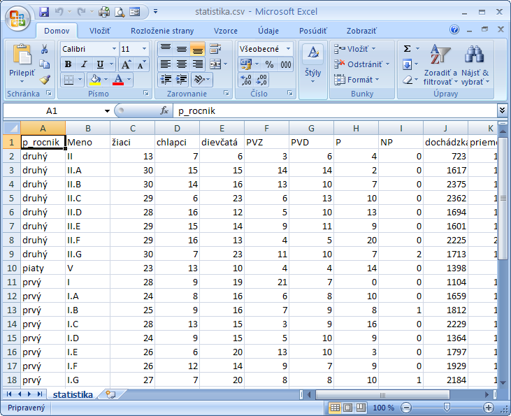
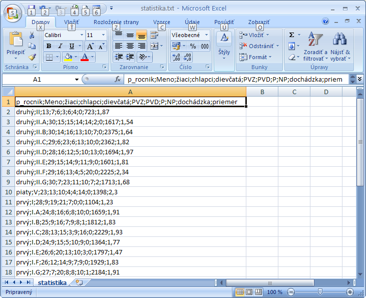

- Import z textovıch súborov
- Rôzne programy umo�òujú zapisova�/exportova� "tabu¾ky" do textovıch súborov, kde polo�ky=ståpce sú odde¾ované
nejakım pevnım znakom (najèastejšie
; ,
,
alebo tabelátorom) a v prvom riadku súboru sú zadané názvy polí tie� pooddelované príslušnım znakom.
Ak je súbor typu *.csv otvorenie v programe Excel prebehne bez
problémov - riadky aj polia sa zapíšu do tabu¾ky a oode¾ovaèe sa nezobrazujú.
uká�kovı súbor statistika.csv

Po otvorení všeobecného textového súboru, kde oddelovaè je tvorenı aj inım znakom sa údaje zapíšu
do buniek v prvom ståpci A a ostatné polia budú prázdne.
uká�kovı súbor statistika.txt

Rozdelenie údajov do ståpcov musíme urobi� ruène.
- Oznaèíme celı ståpec A do bloku cez zálo�ku Údaje -> Nástroje pre údaje ->Text na ståpce
zavoláme dialógové okno, kde najprv zvolíme typ súboru "Polia oddelené znakmi"
- stlaèíme ïalej
- teraz zvolíme odde¾ovaè/odde¾ovaèe (teda èiarku, bodkoèiarku, tabelátor alebo ak je pou�ité nieèo exotické
máme mo�nos� zada� po�adovanı odde¾ovaè)
- V uká�ke si sledujeme èi sú ståpce správne odde¾ované
- Tu mô�me tie� urèi� aby sa znaky
" resp.
' chápali ako "oznaèovaèe textov a teda
sa po oddelení nemajú zobrazi�.
Ak ich chceme ma� zobrazené (èo bıva málokedy) zvolíme oznaèova� textu �iadny
- stlaèíme ïalej
- teraz mo�no pre ka�dı jednotlivı ståpec da� upresnenia prenosu údajov do rôznych formátov
mo�no poveda� aby sa celı ståpec chápal ako text, dátum
- stlaèíme dokonèi�
- Export do textovıch súborov
- Ak potrebujeme naèítaè excelácku tabu¾ku do programu, ktorı toto urobi� priamo nevie, mô�me urobi�
obchádzku cez súbory typu *.csv alebo *.txt.
- Zvolíme Zapísa� ako a vyberieme "Ïalšie formáty"
- Obyèajne zvolíme súbor *.csv, s ktovım vie pracova� väèšina probramov
- Ak potrebujeme *.txt súbor zvolíme si aj prostredie v ktorom sa má txt súbor otvára�
(kôli správnemu kódovaniu slovenèiny) Win, Macintosh, DOS a tie� oddelovaè
- zadáme mu meno a stlaèíme Ulo�i� a súbor je vytvorenı